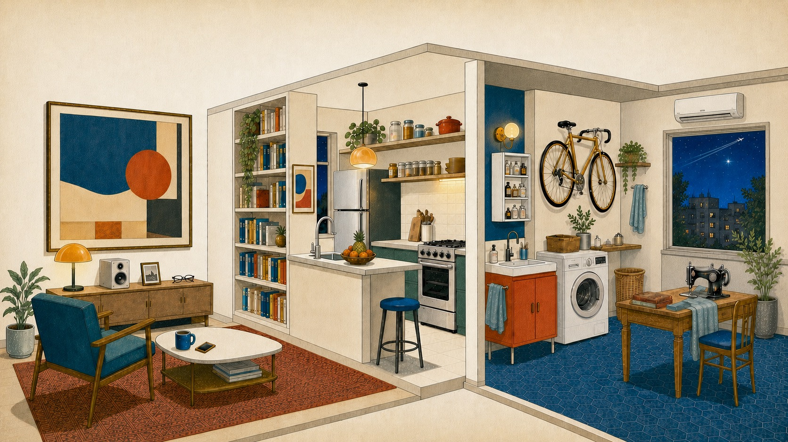

Stories of everyday abundance
The sitting room
Edward Bellamy once imagined music on demand and said it would be "the limit of human felicity." A modern apartment is full of things that once drew the same kind of awe.
scroll to move through the apartment
At eleven, you switch off the lights, silence your phone, and lie down to sleep. As your head hits the pillow, you idly wonder what people slept on before mattresses.

Every item in this room began as an impossibility; a dream that, if created, could bring immeasurable joy or relief. And every one of them is something we regularly walk past without a second thought.
It is to humanity’s great credit that we remain restless in the midst of these wonders. We continue to look forward, pushing the frontier further with new treatments, new tools, and new institutions that will help future generations in ways we can’t even picture yet.
But our lives today are a gallery of past generations’ heroic efforts to do the same. It serves us, and honors them, to recapture whenever possible the old sense of awe at these wonders that have long since become furniture.